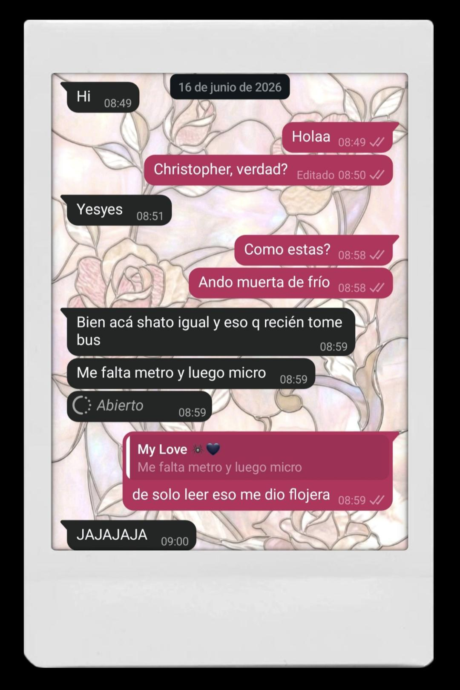
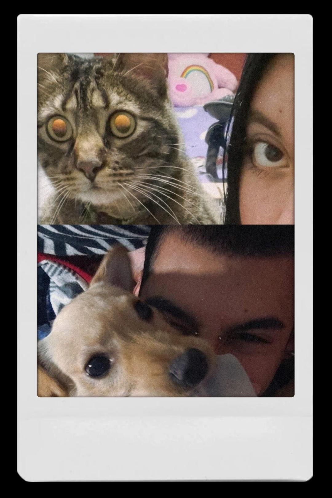
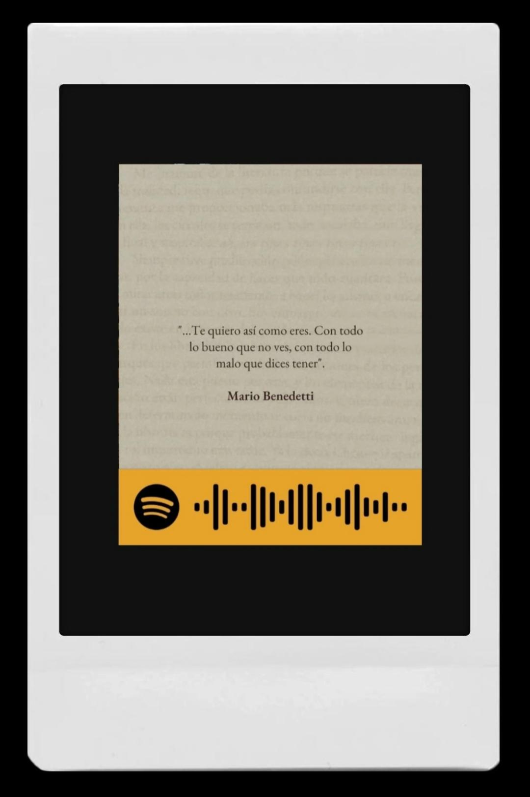
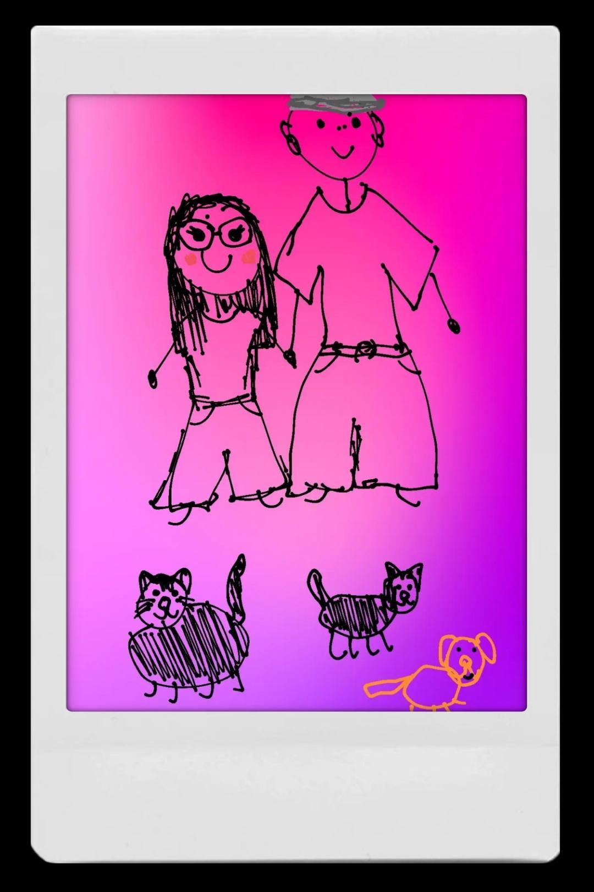

Abra cuando esté listo...
Me hubiera gustado hacer algo diferente y más llamativo, pero por desgracia no hay un presupuesto muy bueno. Aún así, quería darle algo aunque fuera mínimo que pudiera expresar todo el amor y orgullo que siento por usted.
Cuando recién comenzamos a hablar, jamás se me pasó por la cabeza que llegaríamos hasta aquí, lo cual es curioso ya que ahora no me imagino cómo sería no tenerlo. Recuerdo las primeras fotos, las primeras llamadas e incluso las primeras veces que usted me decía cosas lindas y yo me ponía toda nerviosa, pero en ese entonces me costaba admitirlo.
Pero lo que más me gusta recordar es ese audio que me mandó todo tomado y me dijo que me amaba, ese momento se me quedó guardado. De hecho esa misma noche le conté a la mari lo que había ocurrido. Yo sé que es algo absurdo pero es algo que no puedo olvidar. Esa noche me costó dormir ya que estaba toda nerviosa y llena de incertidumbre porque no sabía cómo reaccionar y que decir, así que espere hasta el día siguiente y sacar el tema.
La verdad corazón es que no sé cómo explicar todo lo que siento por usted. Ya que por desgracia no nos hemos visto directamente, pero increíblemente la distancia no fue impedimento ya que usted logró tocar mi corazón de una forma genuina e indescriptible que me hace querer llorar.
A mi parecer, cada mensaje, risa, llanto, silencio, preocupación y mini escenas de dramatización han sido fundamentales para seguir aquí. Conocerlo cada día más hace que mi corazón y cuerpo se sientan diferentes. Ya no estoy 24/7 en alerta, suelo estar más tranquila, porque usted me está brindando esa paz que tanto esperé. Y creo que esa es una de las cosas que más valoró de tenerlo en mi vida.
También valoró muchísimo el hecho de que permanezca a mi lado a pesar de que muchas veces está cansado consigo mismo. Estoy orgullosa de usted corazón, porque sé lo mucho que cuesta seguir de pie incluso cuando siente que no da más.
Vale tanto corazón, usted es más que suficiente y jamás me hará pensar lo contrario. Por eso nunca en la vida sienta inseguridad de lo que siento por usted, porque me faltaría arrancarme el corazón y dárselo.
Cada vez que sienta que no entiende lo que sucede con usted venga a mi. Yo sé que no es lo mismo que estar físicamente a su lado, créame que lo sé muy bien, pero mientras es así y por eso quiero que sepa que siempre puede encontrarme aquí, no me iré y siempre estaré para usted. No pierdo la esperanza de que todo será diferente y de que llegara el día en el que cuando usted se sienta chato del mundo vendrá hacía mis brazos para buscar un poco de tranquilidad.
Sé que muchas veces soy demasiado empalagosa y "tonta", pero es que me siento tan bien con usted que no siento necesidad de ocultar cómo soy.
Con usted puedo hablar de cualquier cosa aunque muchas veces no las entienda usted me sigue escuchando. Y eso me llena el corazoncito.
Sé que usted es una persona que ha pasado por muchas cosas las cuales no merecía. Y desearía tanto poder cambiar su pasado, pero por más que quiera sé que no puedo. Aunque lo que si puedo es ayudarlo a sanar en el presente e ir planeando un futuro.
Y es que amo tanto cada parte de usted, tanto en personalidad cómo en fisico. Amo su fuerza para seguir, amo su forma de expresarse sobre las cosas que le gustan, amo sus ojos, sus tatuajes, su voz, su nariz, su ceño fruncido, sus aros, su personalidad y su gran gusto para vestirse. Amo cada parte de usted. Entiéndalo.
Hay veces en las que siento inseguridad al decirlo tanto, ya que me da miedo chatearlo con tantos "lo amo", pero es que es tanto que estoy llorando mientras escribo todo esto.
Corazón yo le pido paciencia. Paciencia para el día en el que por fin podamos estar juntos lejos de todos. Paciencia por mi forma de ser, para mi forma de amar, para mis inseguridades y para mi intensidsd con sensibilidad que muchas veces siento un problema. Espéreme con paciencia mientras me ama.
Muchas veces mi alma es un caos y entiendo que la suya igual, pero por eso quiero que mi alma pueda calmar a la suya y la suya a la mía. Quiero que podamos ser ese lugar de tranquilidad que ambos necesitamos.
Lo amo en la distancia, lo amo en voz y alma. ¡Lo amo siempre!
Por eso deseo que este nuevo año sea diferente, que pueda aprender nuevas cosas y que sea más llevadero. Deseo que pueda encontrar motivos para seguir adelante y disfrutar de las cosas que ama y recordar siempre lo mucho que usted vale.
Y recuerde siempre que si el mundo se pone en contra de usted, yo estaré a su lado para que el mundo este en contra de los dos, porque somos dos. Esto no se basa en que solo uno este para el otro, se basa en algo mutuo. En acompañarnos, escucharnos, cuidarnos y seguir aprendiendo el uno del otro.
Feliz cumpleaños corazón, estoy feliz y orgullosa de usted todos los días 🕷🖤



